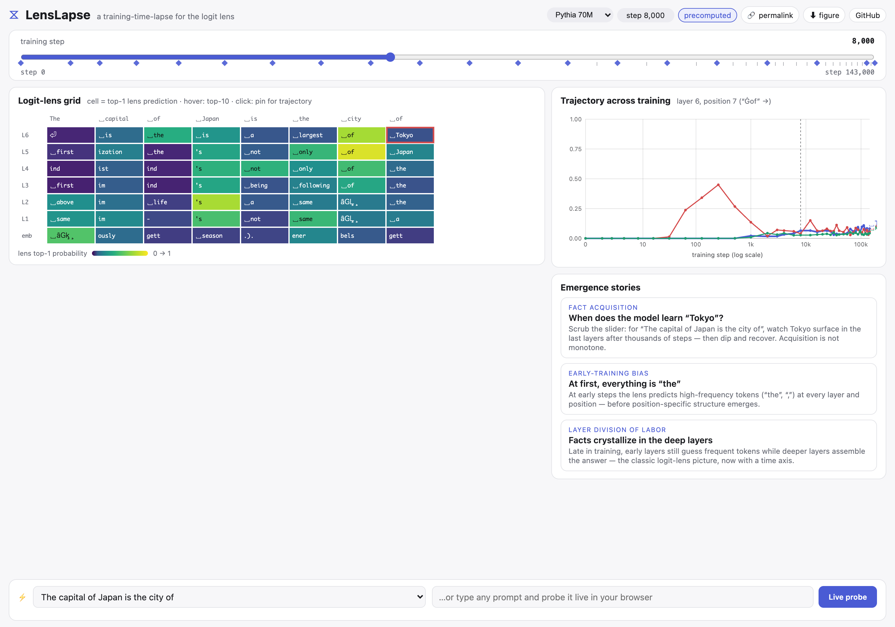
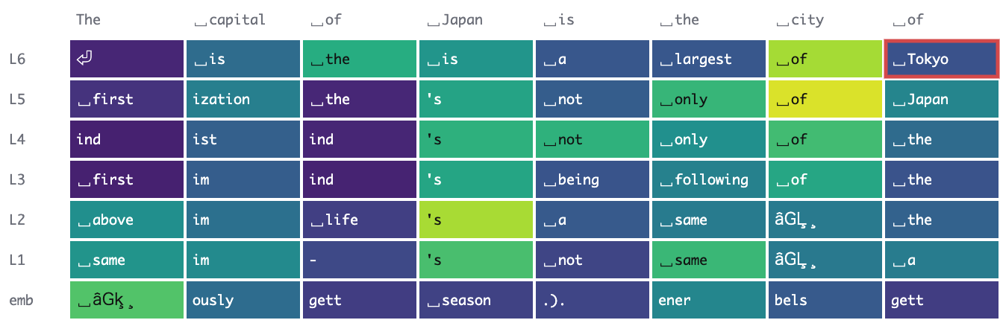

奈良先端科学技術大学院大学(NAIST)
Pythia の公開訓練チェックポイントをスライダーで行き来し、次トークン予測がノイズから知識へと結晶していく過程を、層ごとに、バックエンドなしで眺める。
logit lens は、transformer の次トークン予測が層を経てどう形づくられるかを覗く定番の手法です。しかし既存のホスト型ツールが見せてくれるのは、学習を終えた 1 つのモデルだけでした。LensLapse は訓練時間そのものを、トークンレベル解釈可能性の第一級の軸にします。スライダーで Pythia-70M の公開チェックポイント 38 個を行き来すると、層ごと・位置ごとの lens 予測が初期の頻度バイアスから事実知識へと結晶していく様子を観察できます。厳選プロンプトは事前計算済みデータから即座に描画され、自由入力のプロンプトは WebGPU/WASM の ONNX 推論により、ブラウザの中でその場で解析されます。サーバーも API キーも不要で、プロンプトが端末の外に出ることはありません。ブラウザ内 lens は評価スイート上で fp32 PyTorch と top-1 一致率 100%(int8 量子化では最悪 52% まで低下)、ウォーム状態のプローブは Chromium/WebKit において 3 つのモデルサイズ(14M〜160M)で 63〜316 ms で完了します。
既存の lens ツールが見るのは完成後のモデル 1 つ。LensLapse は Pythia-70M の 38 チェックポイント(step 0〜143k)を横断し、正確な P(token) 軌跡を描く。一度覚え、忘れ、また覚え直すような、単調でない事実獲得の過程まで見える。
自由入力プロンプトは onnxruntime-web(WebGPU、非対応環境では WASM)による 1 回の forward パスで解析。静的サイト + HF Hub 上の重みという構成なので、ホスティング費用ゼロのまま同時利用者数に上限がなく、デモが朽ちない。
pip install して lenslapse server を実行すると、アプリ本体とプローブ API
がローカルの 1 ポートで立ち上がる。HF Hub のモデルもローカルの Trainer 出力も、ONNX
変換や設定ファイルなしにそのまま探索できる。レシピはアーキテクチャ非依存で、GPT-NeoX・GPT-2・Llama 系
RMSNorm がパリティ検査を通過済み。
設計上 lens(hL) はモデルの logits と一致し、エクスポート時にチェックポイントごとに検証される。fp16 の重み格納は評価スイート上で fp32 PyTorch と top-1 一致率 100% を保つ。int8 動的量子化は 52% まで落ちるため採用していない。
ワンクリックでタイムラプス全体を再生し、top-1 が変わったセルはその瞬間に発光。ピン留めしたセルでは top-10 のバーレースと古典的な層プロファイル(p 対 layer)がアニメーションする。acquisition map は各セルが最終的な答えを覚えたステップを、diff ビューは任意の参照チェックポイントからの変化を、比較モードは 第二のモデルを同じステップで並べて見せる。
主要な操作には CLI の対応物がある(lenslapse probe/trace/models)。
アプリからは現在のビューを再現する CLI / cURL コマンドをコピーでき、任意のトークンを学習過程にわたって
追跡できる。permalink で共有でき、?embed で任意のページに生きたグリッドを埋め込める。


各チェックポイントは一度だけ ONNX のペアに変換します。backbone は埋め込みと各ブロック直後の(最終 layer norm 適用前の)残差ストリームを返し、lens ヘッド(最終 layer norm + unembedding)は任意の層の隠れ状態に適用できます。厳選プロンプトは fp32 PyTorch で事前計算した静的 JSON として配信し、自由入力プロンプトはブラウザ内でトークナイズして 1 回の forward パスで解析。全 (layer, position) の隠れ状態を 1 回のバッチ行列積で lens ヘッドに通します。重みは fp16 で保存し、セッション読み込み時に fp32 へキャストします。
Pythia checkpoint (HF Hub, revision step{N})
├─ backbone.f16.onnx input_ids → hidden states [L+1, T, H]
├─ lens.f16.onnx hidden [N, H] → logits [N, V]
└─ precompute → static JSON shards (top-10 per cell + trajectories)
browser (static site, no backend)
├─ precomputed mode: JSON shard → canvas grid + SVG trajectories
└─ live mode: onnxruntime-web (WebGPU → WASM) + transformers.js tokenizer
@misc{okada2026lenslapse,
title = {LensLapse: Watching Language Models Learn with an In-Browser Logit Lens over Training Checkpoints},
author = {Tatsuki Okada},
year = {2026},
note = {AACL-IJCNLP 2026 System Demonstrations (submitted)},
url = {https://github.com/iamtatsuki05/lenslapse}
}